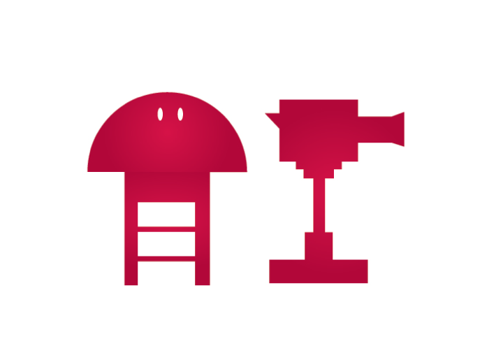

TRABAJOS
CHICAS SALVAJES (Docu-Reality) – CosmoTV (2013)
Es un formato que mezcla el clásico género periodístico con el docu reality. Donde la conductora Mexicana, Clauzzen Hernandez vive los distintos conflictos de la mujer latinoamericana. La primera temporada de seis capítulos trata las temáticas de Obesidad, Anorexia, las jóvenes descontroladas por el alcohol, las mujeres que participan en lucha libre mexicana, las madres presas con sus hijos en la cárcel y la moda de las chicas hot.
DESAFIO PIECIDEX (Publicidad-Reality) (2013)
Con la conducción de Mariano Iúdica se realizo el reality del Pie de Atleta, donde cientos de personas se presentaron para participar. Se siguió el desarrollo del tratamiento durante una semana. Obsarvando la efectividad del tratamiento.
Durante una semana se emitió día a día el desarrollo del desafío en todos los canales de aire.
RESIDENTES (Docu-Reality) – América (2012)
Jóvenes egresados de la Facultada de Medicina llegan a la residencia medica con poca experiencia profesional para dejar al “paciente virtual” y encontrarse cara a cara con una realidad sin anestesia.
Guardias, falta de sueño, angustia, llanto y emoción se combinan con sacrificio, compromiso y sobre todo, la entrega y la pasión de los residentes médicos por curar y salvar vidas. Una sobredosis de acción y realidad.
EN LLAMAS (Docu-Reality) – America (2012)
Heróicos y valientes bomberos voluntarios ayudan a la comunidad arriesgando sus vidas en incendios, accidentes y rescates.
La ciudad arde más allá del agobiante calor veraniego. Toda clase de situaciones y conflictos azotan y elevan aún más las altas temperaturas: protestas, estallidos sociales, conflictos vecinales, asesinatos y muertes. Todo se conjuga para subir la sensación térmica de una ciudad que está en llamas.
CAMARA VIVA (Docu-Reality) - Magazine (2011-2012)
Es la realidad en directo. Un programa sin intermediarios, donde los hechos de la realidad se muestran tal cual son. Sin periodistas, sin cronistas, la cámara -la imagen que ella capta- y el espectador. Ni más ni menos. Cámara Viva busca retratar el “detrás de escena” de las noticias, sin comentarios ni subrayados. La editorial del no editorial.
RACING TV (Institucional-Reality) – America 24 (2009-2010)
La actualidad del club de Avellaneda en un resumen semanal. Con la conducción de Sebastián Fillol el programa propone entrevistas con glorias y famosos de la institución, la cobertura del partido de la semana, notas con hinchas y difusión de las actividades. Para que te enteres de todo lo que pasa, Racing TV te muestra la intimidad del club de tus amores.
AUTORETRATO – ELLAS ES TAN CARGOSA
PRESENTACIÓN DE LA BARBERÍA EN SALÓN BERLÍN
AUTORETRATO – ELLA ES TAN CARGOSA
COCINEROS ARGENTINOS - CANAL 7
DEPOR TV - TDA
INVESTIGACIÓN LÍMITE – AMÉRICA TV
CÁMARAS DE SEGURIDAD – AMÉRICA TV
VIDAS PARALELAS – AMÉRICA TV
EL DESARROLLADOR – AMÉRICA 24
PRESTIGIO Y PODER – AMÉRICA 24
MILAGROS - Natgeo

INTERVENTIONS – NetGeo
SECTAS – Discovery Channel
INSTINTO ASESINO – Discovery Channel